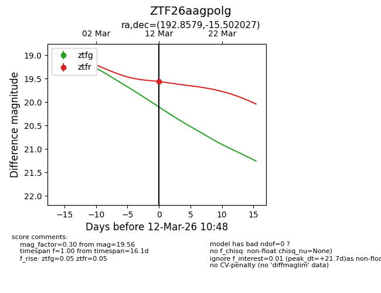
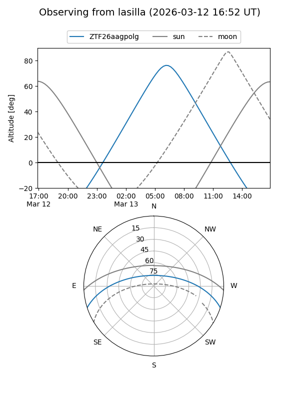
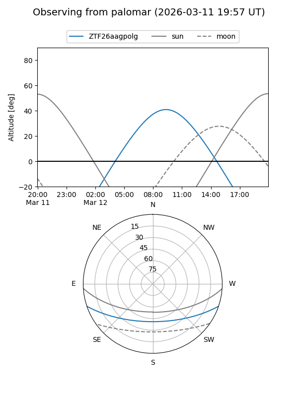
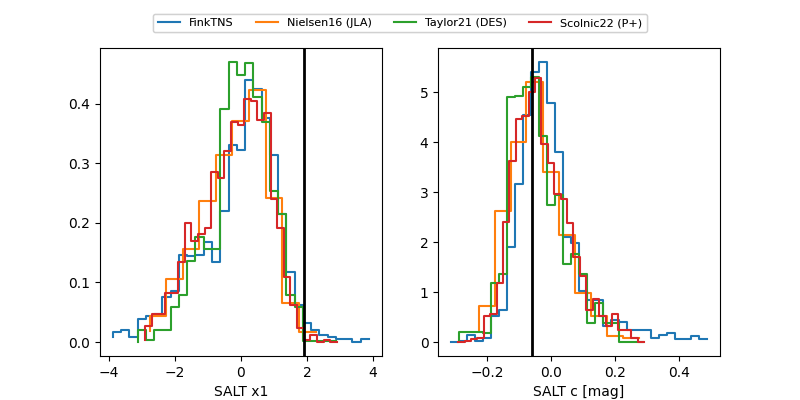

ZTF26aagpolg
Target ZTF26aagpolg at 2026-03-12 10:51
Aliases and brokers:
FINK: link
Lasair: link
ALeRCE: link
alt names
ZTF26aagpolg (ztf,fink_ztf)
Coordinates:
equatorial (ra, dec) = 192.8579,-15.50203
equatorial (HMS+DMS) = 12:51:25.89,-15:30:07.30
galactic (l, b) = (302.9296,+47.36972)
Flags:
Photometry:
last ztfg=19.14, ztfr=19.56
3 ztfg, 2 ztfr detections
Lightcurve

Visibility


Additional plots
